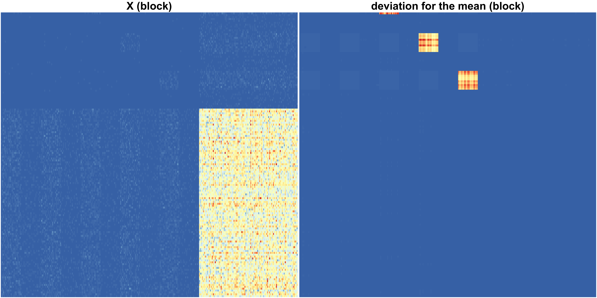
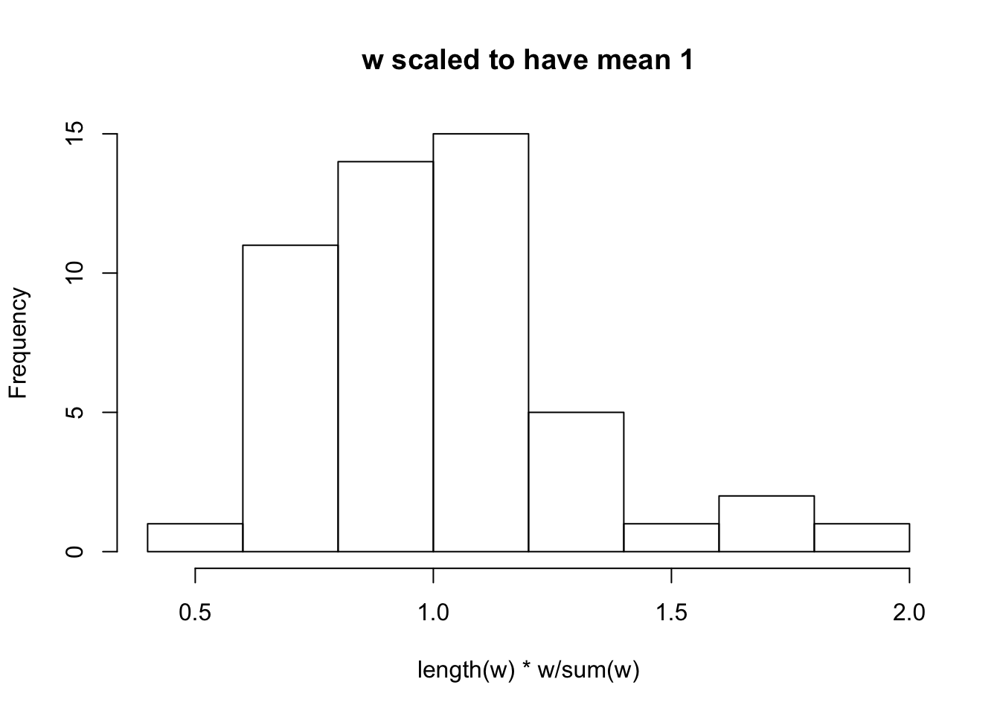
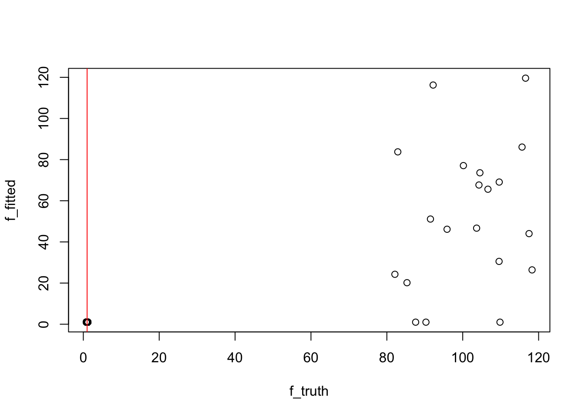
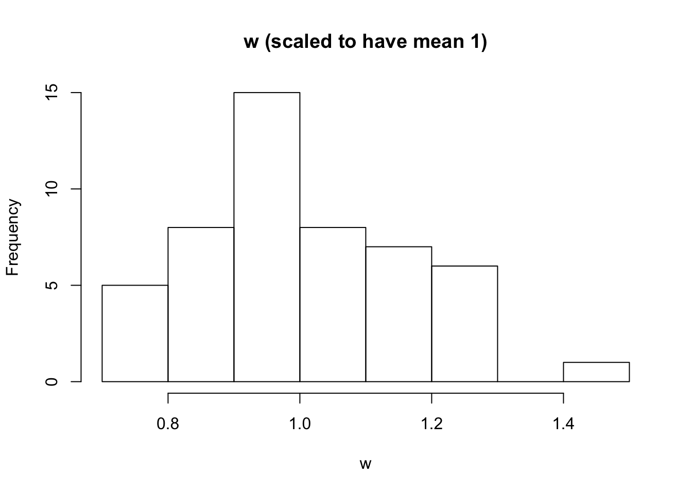
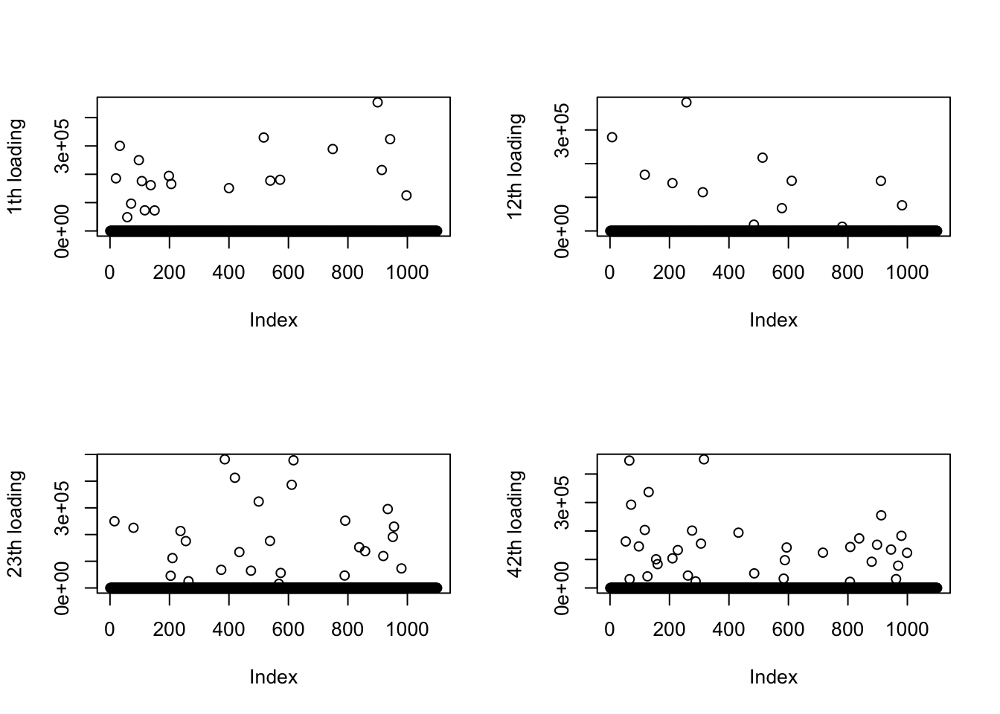
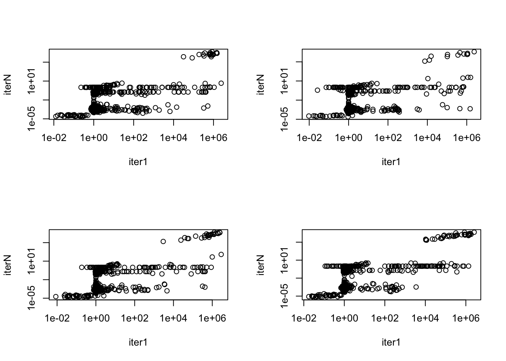
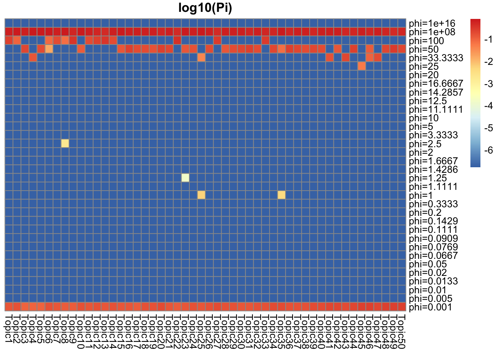
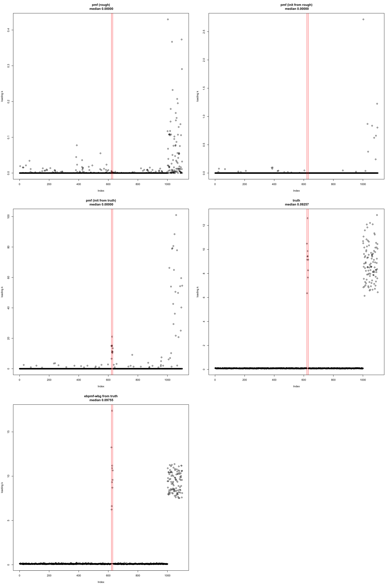

Last updated: 2020-10-26
Checks: 7 0
Knit directory: ebpmf_data_analysis/
This reproducible R Markdown analysis was created with workflowr (version 1.6.2). The Checks tab describes the reproducibility checks that were applied when the results were created. The Past versions tab lists the development history.
Great! Since the R Markdown file has been committed to the Git repository, you know the exact version of the code that produced these results.
Great job! The global environment was empty. Objects defined in the global environment can affect the analysis in your R Markdown file in unknown ways. For reproduciblity it’s best to always run the code in an empty environment.
The command set.seed(20200511) was run prior to running the code in the R Markdown file. Setting a seed ensures that any results that rely on randomness, e.g. subsampling or permutations, are reproducible.
Great job! Recording the operating system, R version, and package versions is critical for reproducibility.
Nice! There were no cached chunks for this analysis, so you can be confident that you successfully produced the results during this run.
Great job! Using relative paths to the files within your workflowr project makes it easier to run your code on other machines.
Great! You are using Git for version control. Tracking code development and connecting the code version to the results is critical for reproducibility.
The results in this page were generated with repository version 989a250. See the Past versions tab to see a history of the changes made to the R Markdown and HTML files.
Note that you need to be careful to ensure that all relevant files for the analysis have been committed to Git prior to generating the results (you can use wflow_publish or wflow_git_commit). workflowr only checks the R Markdown file, but you know if there are other scripts or data files that it depends on. Below is the status of the Git repository when the results were generated:
Ignored files:
Ignored: .DS_Store
Ignored: .Rhistory
Ignored: .Rproj.user/
Ignored: analysis/ebpmf_bg_tutorial_cache/
Ignored: analysis/ebpmf_wbg_model_intro_cache/
Ignored: analysis/ebpmf_wbg_simulate_big_data2_cache/
Ignored: analysis/ebpmf_wbg_simulate_big_data_cache/
Ignored: analysis/ebpmf_wbg_simulation_cache/
Ignored: analysis/investigate_np_ebpmf_wbg_cache/
Ignored: analysis/pmf_greedy_experiment_cache/
Ignored: analysis/sla_data_analysis_k10_cache/
Ignored: data/.DS_Store
Ignored: output/.DS_Store
Ignored: topicView-app/.DS_Store
Untracked files:
Untracked: analysis/draft.Rmd
Untracked: analysis/ebpmf_wbg_simulation_big.Rmd
Untracked: analysis/heatmap.Rmd
Untracked: analysis/investigate_largeK.Rmd
Untracked: analysis/investigate_news_topics.Rmd
Untracked: analysis/summary_sla_news_nips.Rmd
Untracked: analysis/test.R
Untracked: script/Rplots.pdf
Untracked: script/save_volcano_plot.R
Untracked: topicView-app/app_utils.R
Untracked: topicView-app/data/
Untracked: topicView-app/output/
Untracked: topicView-app/rsconnect/
Unstaged changes:
Modified: analysis/ebpmf_wbg_simulate_big_data2.Rmd
Deleted: analysis/sla_data_analysis_k10.Rmd
Deleted: analysis/sla_data_analysis_k5.Rmd
Deleted: analysis/sla_data_analysis_k50.Rmd
Modified: code/util.R
Deleted: data/SLA/SCC2016/Code/APL/compCM.m
Deleted: data/SLA/SCC2016/Code/APL/compMuI.m
Deleted: data/SLA/SCC2016/Code/APL/compParamErr2.m
Deleted: data/SLA/SCC2016/Code/APL/cpl4c.m
Deleted: data/SLA/SCC2016/Code/APL/cplEstimParam.m
Deleted: data/SLA/SCC2016/Code/APL/cpl_basic_demo_PJ.m
Deleted: data/SLA/SCC2016/Code/APL/cpl_demo.m
Deleted: data/SLA/SCC2016/Code/APL/cpl_demo2a.m
Deleted: data/SLA/SCC2016/Code/APL/dcBlkMod.m
Deleted: data/SLA/SCC2016/Code/APL/dcBlkMod2.m
Deleted: data/SLA/SCC2016/Code/APL/dcBlkMod3.m
Deleted: data/SLA/SCC2016/Code/APL/dcbm_nmi_beta_D.m
Deleted: data/SLA/SCC2016/Code/APL/dcbm_nmi_lambda_D.m
Deleted: data/SLA/SCC2016/Code/APL/dcbm_time_vs_n_D.m
Deleted: data/SLA/SCC2016/Code/APL/genDCBlkMod.c
Deleted: data/SLA/SCC2016/Code/APL/genDCBlkMod.mexa64
Deleted: data/SLA/SCC2016/Code/APL/genDCBlkMod2.m
Deleted: data/SLA/SCC2016/Code/APL/initLabel5b.m
Deleted: data/SLA/SCC2016/Code/BCPL/ProfileLike.m
Deleted: data/SLA/SCC2016/Code/BCPL/calCri1.m
Deleted: data/SLA/SCC2016/Code/BCPL/calCri2.m
Deleted: data/SLA/SCC2016/Code/BCPL/mutiExp.m
Deleted: data/SLA/SCC2016/Code/MatlabCode.m
Deleted: data/SLA/SCC2016/Code/NewmanSM/NewmanSM.m
Deleted: data/SLA/SCC2016/Code/coauthorThresh2GiantAdj.txt
Deleted: data/SLA/SCC2016/Code/coauthorThresh2GiantCommLabelK2Matlab.txt
Deleted: data/SLA/SCC2016/Code/functions.R
Deleted: data/SLA/SCC2016/Code/main.R
Deleted: data/SLA/SCC2016/Data/authorList.txt
Deleted: data/SLA/SCC2016/Data/authorPaperBiadj.txt
Deleted: data/SLA/SCC2016/Data/paperCitAdj.txt
Deleted: data/SLA/SCC2016/Data/paperList.txt
Deleted: data/SLA/SCC2016/ReadMe.txt
Deleted: data/uci_BoW.sh
Deleted: data/uci_BoW/docword.kos.txt
Deleted: data/uci_BoW/readme.txt
Deleted: data/uci_BoW/vocab.kos.txt
Deleted: output/sim/v0.4.5/fit_sim_bg_block_n1100_p2100_K50_ebpmf_wbg_maxiter_5000.Rout
Deleted: output/sim/v0.4.5/fit_sim_bg_block_n1100_p2100_K50_ebpmf_wbg_maxiter_5000_from_truth.Rout
Deleted: output/sim/v0.4.5/sim_bg_block_n1100_p2100_K50_ebpmf_wbg_K50_maxiter3.Rds
Deleted: output/sim/v0.4.5/sim_bg_block_n1100_p2100_K50_ebpmf_wbg_K50_maxiter5000.Rds
Deleted: output/sim/v0.4.5/sim_bg_block_n1100_p2100_K50_ebpmf_wbg_K50_maxiter5000_from_truth.Rds
Deleted: output/sim/v0.4.5/sim_bg_block_n1100_p2100_K50_ebpmf_wbg_K50_maxiter50_from_truth2.Rds
Deleted: output/uci_BoW/v0.3.8/fit_kos_ebpmf_bg_K20_maxiter_1000.Rout
Deleted: output/uci_BoW/v0.3.8/fit_kos_ebpmf_bg_K20_maxiter_500.Rout
Deleted: output/uci_BoW/v0.3.8/fit_kos_ebpmf_bg_K20_maxiter_5000.Rout
Deleted: output/uci_BoW/v0.3.8/kos_ebpmf_bg_K20_maxiter1000.Rds
Deleted: output/uci_BoW/v0.3.8/kos_ebpmf_bg_K20_maxiter500.Rds
Deleted: output/uci_BoW/v0.3.8/kos_ebpmf_bg_K20_maxiter5000.Rds
Deleted: output/uci_BoW/v0.3.8/kos_ebpmf_bg_K2_maxiter10.Rds
Deleted: output/uci_BoW/v0.3.9/fit_kos_ebpmf_bg_K100_maxiter_5000.Rout
Deleted: output/uci_BoW/v0.3.9/fit_kos_ebpmf_bg_K20_maxiter_5000.Rout
Deleted: output/uci_BoW/v0.3.9/fit_kos_ebpmf_bg_K50_maxiter_5000.Rout
Deleted: output/uci_BoW/v0.3.9/fit_kos_ebpmf_bg_initLF_K100_maxiter_5000.Rout
Deleted: output/uci_BoW/v0.3.9/fit_kos_ebpmf_bg_initLF_K20_maxiter_5000.Rout
Deleted: output/uci_BoW/v0.3.9/fit_kos_ebpmf_bg_initLF_K300_maxiter_1000.Rout
Deleted: output/uci_BoW/v0.3.9/fit_kos_ebpmf_bg_initLF_K500_maxiter_1000.Rout
Deleted: output/uci_BoW/v0.3.9/fit_kos_ebpmf_bg_initLF_K50_maxiter_5000.Rout
Deleted: output/uci_BoW/v0.3.9/fit_kos_pmf_initLF_K100_maxiter_5000.Rout
Deleted: output/uci_BoW/v0.3.9/fit_kos_pmf_initLF_K20_maxiter_5000.Rout
Deleted: output/uci_BoW/v0.3.9/fit_kos_pmf_initLF_K300_maxiter_1000.Rout
Deleted: output/uci_BoW/v0.3.9/fit_kos_pmf_initLF_K500_maxiter_5000.Rout
Deleted: output/uci_BoW/v0.3.9/fit_kos_pmf_initLF_K50_maxiter_5000.Rout
Deleted: output/uci_BoW/v0.3.9/kos_ebpmf_bg_K100_maxiter1000.Rds
Deleted: output/uci_BoW/v0.3.9/kos_ebpmf_bg_K100_maxiter1500.Rds
Deleted: output/uci_BoW/v0.3.9/kos_ebpmf_bg_K100_maxiter2000.Rds
Deleted: output/uci_BoW/v0.3.9/kos_ebpmf_bg_K100_maxiter500.Rds
Deleted: output/uci_BoW/v0.3.9/kos_ebpmf_bg_K20_maxiter1000.Rds
Deleted: output/uci_BoW/v0.3.9/kos_ebpmf_bg_K20_maxiter1500.Rds
Deleted: output/uci_BoW/v0.3.9/kos_ebpmf_bg_K20_maxiter2000.Rds
Deleted: output/uci_BoW/v0.3.9/kos_ebpmf_bg_K20_maxiter2500.Rds
Deleted: output/uci_BoW/v0.3.9/kos_ebpmf_bg_K20_maxiter3000.Rds
Deleted: output/uci_BoW/v0.3.9/kos_ebpmf_bg_K20_maxiter3500.Rds
Deleted: output/uci_BoW/v0.3.9/kos_ebpmf_bg_K20_maxiter4000.Rds
Deleted: output/uci_BoW/v0.3.9/kos_ebpmf_bg_K20_maxiter4500.Rds
Deleted: output/uci_BoW/v0.3.9/kos_ebpmf_bg_K20_maxiter500.Rds
Deleted: output/uci_BoW/v0.3.9/kos_ebpmf_bg_K20_maxiter5000.Rds
Deleted: output/uci_BoW/v0.3.9/kos_ebpmf_bg_K50_maxiter1000.Rds
Deleted: output/uci_BoW/v0.3.9/kos_ebpmf_bg_K50_maxiter1500.Rds
Deleted: output/uci_BoW/v0.3.9/kos_ebpmf_bg_K50_maxiter2000.Rds
Deleted: output/uci_BoW/v0.3.9/kos_ebpmf_bg_K50_maxiter2500.Rds
Deleted: output/uci_BoW/v0.3.9/kos_ebpmf_bg_K50_maxiter3000.Rds
Deleted: output/uci_BoW/v0.3.9/kos_ebpmf_bg_K50_maxiter3500.Rds
Deleted: output/uci_BoW/v0.3.9/kos_ebpmf_bg_K50_maxiter4000.Rds
Deleted: output/uci_BoW/v0.3.9/kos_ebpmf_bg_K50_maxiter4500.Rds
Deleted: output/uci_BoW/v0.3.9/kos_ebpmf_bg_K50_maxiter500.Rds
Deleted: output/uci_BoW/v0.3.9/kos_ebpmf_bg_initLF50_K100_maxiter1000.Rds
Deleted: output/uci_BoW/v0.3.9/kos_ebpmf_bg_initLF50_K100_maxiter1500.Rds
Deleted: output/uci_BoW/v0.3.9/kos_ebpmf_bg_initLF50_K100_maxiter2000.Rds
Deleted: output/uci_BoW/v0.3.9/kos_ebpmf_bg_initLF50_K100_maxiter2500.Rds
Deleted: output/uci_BoW/v0.3.9/kos_ebpmf_bg_initLF50_K100_maxiter500.Rds
Deleted: output/uci_BoW/v0.3.9/kos_ebpmf_bg_initLF50_K20_maxiter10.Rds
Deleted: output/uci_BoW/v0.3.9/kos_ebpmf_bg_initLF50_K20_maxiter1000.Rds
Deleted: output/uci_BoW/v0.3.9/kos_ebpmf_bg_initLF50_K20_maxiter1500.Rds
Deleted: output/uci_BoW/v0.3.9/kos_ebpmf_bg_initLF50_K20_maxiter2000.Rds
Deleted: output/uci_BoW/v0.3.9/kos_ebpmf_bg_initLF50_K20_maxiter2500.Rds
Deleted: output/uci_BoW/v0.3.9/kos_ebpmf_bg_initLF50_K20_maxiter3000.Rds
Deleted: output/uci_BoW/v0.3.9/kos_ebpmf_bg_initLF50_K20_maxiter3500.Rds
Deleted: output/uci_BoW/v0.3.9/kos_ebpmf_bg_initLF50_K20_maxiter4000.Rds
Deleted: output/uci_BoW/v0.3.9/kos_ebpmf_bg_initLF50_K20_maxiter4500.Rds
Deleted: output/uci_BoW/v0.3.9/kos_ebpmf_bg_initLF50_K20_maxiter5.Rds
Deleted: output/uci_BoW/v0.3.9/kos_ebpmf_bg_initLF50_K20_maxiter500.Rds
Deleted: output/uci_BoW/v0.3.9/kos_ebpmf_bg_initLF50_K20_maxiter5000.Rds
Deleted: output/uci_BoW/v0.3.9/kos_ebpmf_bg_initLF50_K300_maxiter100.Rds
Deleted: output/uci_BoW/v0.3.9/kos_ebpmf_bg_initLF50_K300_maxiter1000.Rds
Deleted: output/uci_BoW/v0.3.9/kos_ebpmf_bg_initLF50_K300_maxiter200.Rds
Deleted: output/uci_BoW/v0.3.9/kos_ebpmf_bg_initLF50_K300_maxiter300.Rds
Deleted: output/uci_BoW/v0.3.9/kos_ebpmf_bg_initLF50_K300_maxiter400.Rds
Deleted: output/uci_BoW/v0.3.9/kos_ebpmf_bg_initLF50_K300_maxiter500.Rds
Deleted: output/uci_BoW/v0.3.9/kos_ebpmf_bg_initLF50_K300_maxiter600.Rds
Deleted: output/uci_BoW/v0.3.9/kos_ebpmf_bg_initLF50_K300_maxiter700.Rds
Deleted: output/uci_BoW/v0.3.9/kos_ebpmf_bg_initLF50_K300_maxiter800.Rds
Deleted: output/uci_BoW/v0.3.9/kos_ebpmf_bg_initLF50_K300_maxiter900.Rds
Deleted: output/uci_BoW/v0.3.9/kos_ebpmf_bg_initLF50_K50_maxiter1000.Rds
Deleted: output/uci_BoW/v0.3.9/kos_ebpmf_bg_initLF50_K50_maxiter1500.Rds
Deleted: output/uci_BoW/v0.3.9/kos_ebpmf_bg_initLF50_K50_maxiter2000.Rds
Deleted: output/uci_BoW/v0.3.9/kos_ebpmf_bg_initLF50_K50_maxiter2500.Rds
Deleted: output/uci_BoW/v0.3.9/kos_ebpmf_bg_initLF50_K50_maxiter3000.Rds
Deleted: output/uci_BoW/v0.3.9/kos_ebpmf_bg_initLF50_K50_maxiter3500.Rds
Deleted: output/uci_BoW/v0.3.9/kos_ebpmf_bg_initLF50_K50_maxiter4000.Rds
Deleted: output/uci_BoW/v0.3.9/kos_ebpmf_bg_initLF50_K50_maxiter4500.Rds
Deleted: output/uci_BoW/v0.3.9/kos_ebpmf_bg_initLF50_K50_maxiter500.Rds
Deleted: output/uci_BoW/v0.3.9/kos_ebpmf_bg_initLF50_K50_maxiter5000.Rds
Deleted: output/uci_BoW/v0.3.9/kos_init_nmf_K100_iter50.Rds
Deleted: output/uci_BoW/v0.3.9/kos_init_nmf_K20_iter50.Rds
Deleted: output/uci_BoW/v0.3.9/kos_init_nmf_K300_iter50.Rds
Deleted: output/uci_BoW/v0.3.9/kos_init_nmf_K500_iter50.Rds
Deleted: output/uci_BoW/v0.3.9/kos_init_nmf_K50_iter50.Rds
Deleted: output/uci_BoW/v0.3.9/kos_pmf_initLF50_K100_maxiter1000.Rds
Deleted: output/uci_BoW/v0.3.9/kos_pmf_initLF50_K100_maxiter1500.Rds
Deleted: output/uci_BoW/v0.3.9/kos_pmf_initLF50_K100_maxiter2000.Rds
Deleted: output/uci_BoW/v0.3.9/kos_pmf_initLF50_K100_maxiter2500.Rds
Deleted: output/uci_BoW/v0.3.9/kos_pmf_initLF50_K100_maxiter3000.Rds
Deleted: output/uci_BoW/v0.3.9/kos_pmf_initLF50_K100_maxiter3500.Rds
Deleted: output/uci_BoW/v0.3.9/kos_pmf_initLF50_K100_maxiter4000.Rds
Deleted: output/uci_BoW/v0.3.9/kos_pmf_initLF50_K100_maxiter4500.Rds
Deleted: output/uci_BoW/v0.3.9/kos_pmf_initLF50_K100_maxiter500.Rds
Deleted: output/uci_BoW/v0.3.9/kos_pmf_initLF50_K100_maxiter5000.Rds
Deleted: output/uci_BoW/v0.3.9/kos_pmf_initLF50_K20_maxiter10.Rds
Deleted: output/uci_BoW/v0.3.9/kos_pmf_initLF50_K20_maxiter1000.Rds
Deleted: output/uci_BoW/v0.3.9/kos_pmf_initLF50_K20_maxiter1500.Rds
Deleted: output/uci_BoW/v0.3.9/kos_pmf_initLF50_K20_maxiter2000.Rds
Deleted: output/uci_BoW/v0.3.9/kos_pmf_initLF50_K20_maxiter2500.Rds
Deleted: output/uci_BoW/v0.3.9/kos_pmf_initLF50_K20_maxiter3000.Rds
Deleted: output/uci_BoW/v0.3.9/kos_pmf_initLF50_K20_maxiter3500.Rds
Deleted: output/uci_BoW/v0.3.9/kos_pmf_initLF50_K20_maxiter4000.Rds
Deleted: output/uci_BoW/v0.3.9/kos_pmf_initLF50_K20_maxiter4500.Rds
Deleted: output/uci_BoW/v0.3.9/kos_pmf_initLF50_K20_maxiter5.Rds
Deleted: output/uci_BoW/v0.3.9/kos_pmf_initLF50_K20_maxiter500.Rds
Deleted: output/uci_BoW/v0.3.9/kos_pmf_initLF50_K20_maxiter5000.Rds
Deleted: output/uci_BoW/v0.3.9/kos_pmf_initLF50_K300_maxiter100.Rds
Deleted: output/uci_BoW/v0.3.9/kos_pmf_initLF50_K300_maxiter1000.Rds
Deleted: output/uci_BoW/v0.3.9/kos_pmf_initLF50_K300_maxiter200.Rds
Deleted: output/uci_BoW/v0.3.9/kos_pmf_initLF50_K300_maxiter300.Rds
Deleted: output/uci_BoW/v0.3.9/kos_pmf_initLF50_K300_maxiter400.Rds
Deleted: output/uci_BoW/v0.3.9/kos_pmf_initLF50_K300_maxiter500.Rds
Deleted: output/uci_BoW/v0.3.9/kos_pmf_initLF50_K300_maxiter600.Rds
Deleted: output/uci_BoW/v0.3.9/kos_pmf_initLF50_K300_maxiter700.Rds
Deleted: output/uci_BoW/v0.3.9/kos_pmf_initLF50_K300_maxiter800.Rds
Deleted: output/uci_BoW/v0.3.9/kos_pmf_initLF50_K300_maxiter900.Rds
Deleted: output/uci_BoW/v0.3.9/kos_pmf_initLF50_K50_maxiter1000.Rds
Deleted: output/uci_BoW/v0.3.9/kos_pmf_initLF50_K50_maxiter1500.Rds
Deleted: output/uci_BoW/v0.3.9/kos_pmf_initLF50_K50_maxiter2000.Rds
Deleted: output/uci_BoW/v0.3.9/kos_pmf_initLF50_K50_maxiter2500.Rds
Deleted: output/uci_BoW/v0.3.9/kos_pmf_initLF50_K50_maxiter3000.Rds
Deleted: output/uci_BoW/v0.3.9/kos_pmf_initLF50_K50_maxiter3500.Rds
Deleted: output/uci_BoW/v0.3.9/kos_pmf_initLF50_K50_maxiter4000.Rds
Deleted: output/uci_BoW/v0.3.9/kos_pmf_initLF50_K50_maxiter4500.Rds
Deleted: output/uci_BoW/v0.3.9/kos_pmf_initLF50_K50_maxiter500.Rds
Deleted: output/uci_BoW/v0.3.9/kos_pmf_initLF50_K50_maxiter5000.Rds
Deleted: output/uci_BoW/v0.4.2/fit_kos_ebpmf_wbg_initLF_K100_maxiter_5000.Rout
Deleted: output/uci_BoW/v0.4.2/fit_kos_ebpmf_wbg_initLF_K20_maxiter_5000.Rout
Deleted: output/uci_BoW/v0.4.2/fit_kos_ebpmf_wbg_initLF_K50_maxiter_5000.Rout
Deleted: output/uci_BoW/v0.4.2/fit_kos_ebpmf_wbg_initL_K100_maxiter_5000.Rout
Deleted: output/uci_BoW/v0.4.2/fit_kos_ebpmf_wbg_initL_K20_maxiter_5000.Rout
Deleted: output/uci_BoW/v0.4.2/fit_kos_ebpmf_wbg_initL_K50_maxiter_5000.Rout
Deleted: output/uci_BoW/v0.4.2/kos_ebpmf_wbg_initL50_K20_maxiter10.Rds
Deleted: output/uci_BoW/v0.4.2/kos_ebpmf_wbg_initL50_K20_maxiter1000.Rds
Deleted: output/uci_BoW/v0.4.2/kos_ebpmf_wbg_initL50_K20_maxiter1500.Rds
Deleted: output/uci_BoW/v0.4.2/kos_ebpmf_wbg_initL50_K20_maxiter2000.Rds
Deleted: output/uci_BoW/v0.4.2/kos_ebpmf_wbg_initL50_K20_maxiter2500.Rds
Deleted: output/uci_BoW/v0.4.2/kos_ebpmf_wbg_initL50_K20_maxiter3000.Rds
Deleted: output/uci_BoW/v0.4.2/kos_ebpmf_wbg_initL50_K20_maxiter3500.Rds
Deleted: output/uci_BoW/v0.4.2/kos_ebpmf_wbg_initL50_K20_maxiter4000.Rds
Deleted: output/uci_BoW/v0.4.2/kos_ebpmf_wbg_initL50_K20_maxiter4500.Rds
Deleted: output/uci_BoW/v0.4.2/kos_ebpmf_wbg_initL50_K20_maxiter500.Rds
Deleted: output/uci_BoW/v0.4.2/kos_ebpmf_wbg_initL50_K20_maxiter5000.Rds
Deleted: output/uci_BoW/v0.4.2/kos_ebpmf_wbg_initL50_K50_maxiter1000.Rds
Deleted: output/uci_BoW/v0.4.2/kos_ebpmf_wbg_initL50_K50_maxiter1500.Rds
Deleted: output/uci_BoW/v0.4.2/kos_ebpmf_wbg_initL50_K50_maxiter2000.Rds
Deleted: output/uci_BoW/v0.4.2/kos_ebpmf_wbg_initL50_K50_maxiter2500.Rds
Deleted: output/uci_BoW/v0.4.2/kos_ebpmf_wbg_initL50_K50_maxiter3000.Rds
Deleted: output/uci_BoW/v0.4.2/kos_ebpmf_wbg_initL50_K50_maxiter3500.Rds
Deleted: output/uci_BoW/v0.4.2/kos_ebpmf_wbg_initL50_K50_maxiter4000.Rds
Deleted: output/uci_BoW/v0.4.2/kos_ebpmf_wbg_initL50_K50_maxiter4500.Rds
Deleted: output/uci_BoW/v0.4.2/kos_ebpmf_wbg_initL50_K50_maxiter500.Rds
Deleted: output/uci_BoW/v0.4.2/kos_ebpmf_wbg_initL50_K50_maxiter5000.Rds
Deleted: output/uci_BoW/v0.4.2/kos_ebpmf_wbg_initLF50_K100_maxiter1000.Rds
Deleted: output/uci_BoW/v0.4.2/kos_ebpmf_wbg_initLF50_K100_maxiter1500.Rds
Deleted: output/uci_BoW/v0.4.2/kos_ebpmf_wbg_initLF50_K100_maxiter2000.Rds
Deleted: output/uci_BoW/v0.4.2/kos_ebpmf_wbg_initLF50_K100_maxiter2500.Rds
Deleted: output/uci_BoW/v0.4.2/kos_ebpmf_wbg_initLF50_K100_maxiter500.Rds
Deleted: output/uci_BoW/v0.4.2/kos_ebpmf_wbg_initLF50_K20_maxiter10.Rds
Deleted: output/uci_BoW/v0.4.2/kos_ebpmf_wbg_initLF50_K20_maxiter1000.Rds
Deleted: output/uci_BoW/v0.4.2/kos_ebpmf_wbg_initLF50_K20_maxiter1500.Rds
Deleted: output/uci_BoW/v0.4.2/kos_ebpmf_wbg_initLF50_K20_maxiter2000.Rds
Deleted: output/uci_BoW/v0.4.2/kos_ebpmf_wbg_initLF50_K20_maxiter2500.Rds
Deleted: output/uci_BoW/v0.4.2/kos_ebpmf_wbg_initLF50_K20_maxiter3000.Rds
Deleted: output/uci_BoW/v0.4.2/kos_ebpmf_wbg_initLF50_K20_maxiter3500.Rds
Deleted: output/uci_BoW/v0.4.2/kos_ebpmf_wbg_initLF50_K20_maxiter4000.Rds
Deleted: output/uci_BoW/v0.4.2/kos_ebpmf_wbg_initLF50_K20_maxiter4500.Rds
Deleted: output/uci_BoW/v0.4.2/kos_ebpmf_wbg_initLF50_K20_maxiter500.Rds
Deleted: output/uci_BoW/v0.4.2/kos_ebpmf_wbg_initLF50_K20_maxiter5000.Rds
Deleted: output/uci_BoW/v0.4.2/kos_ebpmf_wbg_initLF50_K3_maxiter10.Rds
Deleted: output/uci_BoW/v0.4.2/kos_ebpmf_wbg_initLF50_K50_maxiter1000.Rds
Deleted: output/uci_BoW/v0.4.2/kos_ebpmf_wbg_initLF50_K50_maxiter1500.Rds
Deleted: output/uci_BoW/v0.4.2/kos_ebpmf_wbg_initLF50_K50_maxiter2000.Rds
Deleted: output/uci_BoW/v0.4.2/kos_ebpmf_wbg_initLF50_K50_maxiter2500.Rds
Deleted: output/uci_BoW/v0.4.2/kos_ebpmf_wbg_initLF50_K50_maxiter3000.Rds
Deleted: output/uci_BoW/v0.4.2/kos_ebpmf_wbg_initLF50_K50_maxiter3500.Rds
Deleted: output/uci_BoW/v0.4.2/kos_ebpmf_wbg_initLF50_K50_maxiter4000.Rds
Deleted: output/uci_BoW/v0.4.2/kos_ebpmf_wbg_initLF50_K50_maxiter4500.Rds
Deleted: output/uci_BoW/v0.4.2/kos_ebpmf_wbg_initLF50_K50_maxiter500.Rds
Deleted: output/uci_BoW/v0.4.2/kos_ebpmf_wbg_initLF50_K50_maxiter5000.Rds
Deleted: output/uci_BoW/v0.4.2/kos_init_nmf_K100_iter50.Rds
Deleted: output/uci_BoW/v0.4.2/kos_init_nmf_K20_iter50.Rds
Deleted: output/uci_BoW/v0.4.2/kos_init_nmf_K300_iter50.Rds
Deleted: output/uci_BoW/v0.4.2/kos_init_nmf_K3_iter50.Rds
Deleted: output/uci_BoW/v0.4.2/kos_init_nmf_K500_iter50.Rds
Deleted: output/uci_BoW/v0.4.2/kos_init_nmf_K50_iter50.Rds
Deleted: output/uci_BoW/v0.4.4/fit_kos_np_ebpmf_wbg_initLF_K100_maxiter_5000.Rout
Deleted: output/uci_BoW/v0.4.4/fit_kos_np_ebpmf_wbg_initLF_K20_maxiter_5000.Rout
Deleted: output/uci_BoW/v0.4.4/fit_kos_np_ebpmf_wbg_initLF_K50_maxiter_5000.Rout
Deleted: output/uci_BoW/v0.4.4/kos_np_ebpmf_wbg_initLF50_K100_maxiter500.Rds
Deleted: output/uci_BoW/v0.4.4/kos_np_ebpmf_wbg_initLF50_K20_maxiter500.Rds
Deleted: output/uci_BoW/v0.4.4/kos_np_ebpmf_wbg_initLF50_K50_maxiter500.Rds
Modified: topicView-app/app.R
Note that any generated files, e.g. HTML, png, CSS, etc., are not included in this status report because it is ok for generated content to have uncommitted changes.
These are the previous versions of the repository in which changes were made to the R Markdown (analysis/ebpmf_wbg_simulation_big2.Rmd) and HTML (docs/ebpmf_wbg_simulation_big2.html) files. If you’ve configured a remote Git repository (see ?wflow_git_remote), click on the hyperlinks in the table below to view the files as they were in that past version.
| File | Version | Author | Date | Message |
|---|---|---|---|---|
| Rmd | 989a250 | zihao12 | 2020-10-26 | update simualtion2 |
| html | fe147d9 | zihao12 | 2020-10-26 | Build site. |
| Rmd | f3bfe33 | zihao12 | 2020-10-26 | analysis/ebpmf_wbg_simulation_big2.Rmd |
| html | c48c518 | zihao12 | 2020-10-24 | Build site. |
| Rmd | fc174dc | zihao12 | 2020-10-24 | update ebpmf_wbg_simulation_big2.Rmd |
pmf fit (50 iterations). Call them model_from_truth and model_from_pmf respectively.pmf (initialized from random and from truth), Call them model_pmf and model_pmf_from_truth.model_from_truth gets good results. The prior makes sense.model_from_pmf is bad. It has way lower ELBO but even higher expected loglikelihood (which suggests issue with pmf fit maybe), which means very high (bad) KL. It does not learn the structure right.pmf does not find good structure even when initialized from truth (obvious when compared to ebpmf-wbg initialized from truth). Since we rely on pmf for initialization, this might explain why model_from_pmf fails. Also, this might suggest when loadings and factors are highly correlated, pmf does not work (here correlation is around \(0.8 ~ 0.9\))(Note there is a small bug of placing grids for g in model_from_truth (missed placing two very big phi) but the result seems okay. )
rm(list = ls())
knitr::opts_chunk$set(message = FALSE, warning = FALSE, autodep = TRUE)library(ggplot2)
library(gridExtra)
library(Matrix)
source("code/misc.R")
source("code/util.R")model_from_truth = readRDS("output/sim/v0.4.5/exper2/sim_bg_block_n1100_p2100_K50_ebpmf_wbg_K50_maxiter5000_from_truth.Rds")
model_from_pmf = readRDS("output/sim/v0.4.5/exper2/sim_bg_block_n1100_p2100_K50_ebpmf_wbg_K50_maxiter5000.Rds")
model_from_pmf_iter1 = readRDS("output/sim/v0.4.5/exper2/sim_bg_block_n1100_p2100_K50_ebpmf_wbg_K50_maxiter1.Rds")
truth = readRDS("output/sim/v0.4.5/exper2/truth.sim_bg_block_n1100_p2100_K50.Rds")
init = readRDS("output/sim/v0.4.5/exper2/init.sim_bg_block_n1100_p2100_K50.Rds")
model_pmf_init = init$pmf
model_pmf = readRDS("output/sim/v0.4.5/exper2/sim_bg_block_n1100_p2100_K50_pmf_K50_maxiter5000.Rds")
model_pmf_from_truth = readRDS("output/sim/v0.4.5/exper2/sim_bg_block_n1100_p2100_K50_pmf_K50_maxiter5000_from_truth.Rds")
X = read_sim_bag_of_words("output/sim/v0.4.5/exper2/docword.sim_bg_block_n1100_p2100_K50.txt")
n = nrow(X)
p = ncol(X)Below I show some of the blocks in \(n = 1...1000, p = 1:2000\)
## X (block)
data = as.matrix(X)[1:100, 1:200]
quantile(data, probs = seq(85,100)/100) 85% 86% 87% 88% 89% 90% 91% 92% 93% 94% 95% 96% 97% 98% 99% 100%
0 0 0 0 0 0 0 0 0 0 0 0 0 1 1 4 p1 = pheatmap(data,
cluster_rows=FALSE, cluster_cols=FALSE,silent = TRUE,
fontsize = 48,legend = FALSE,
main = "X (block)")
data = truth$L[1:100,] %*% t(truth$F[1:200, ])
quantile(data, probs = seq(1,10)/10) 10% 20% 30% 40% 50% 60%
49.63230 50.86734 128.32094 140.31698 148.64128 158.80422
70% 80% 90% 100%
172.47518 233.86550 265.42654 14392.56450 ## deviation from mean (block)
p2 = pheatmap(data,
cluster_rows=FALSE, cluster_cols=FALSE,silent = TRUE,
fontsize = 48,legend = FALSE,
main = "deviation for the mean (block)")
plot_list = list(X = p1[[4]], dev_mean = p2[[4]])
grid.arrange(arrangeGrob(grobs= plot_list,ncol=2))
Show the block at the end (for frequent words/docs)
## X (block of frequent words)
data = as.matrix(X)[(n-150):n, (p-300):p]
quantile(data, probs = seq(70,100)/100) 70% 71% 72% 73% 74% 75% 76% 77% 78% 79% 80% 81% 82% 83% 84% 85%
1 1 1 1 2 2 2 2 6 12 14 15 16 17 18 18
86% 87% 88% 89% 90% 91% 92% 93% 94% 95% 96% 97% 98% 99% 100%
19 20 20 21 22 23 23 24 25 26 27 28 30 32 45 p3 = pheatmap(data,
cluster_rows=FALSE, cluster_cols=FALSE,silent = TRUE,
fontsize = 48,legend = FALSE,
main = "X (block)")
## deviation from mean (block of frequent words)
data = truth$L[(n-150):n,] %*% t(truth$F[(p-300):p, ])
quantile(data, probs = seq(1,10)/10) 10% 20% 30% 40% 50% 60%
48.99563 49.64184 50.17855 50.70529 51.45316 124.97454
70% 80% 90% 100%
141.42376 153.12466 169.51752 14134.18324 p4 = pheatmap(data,
cluster_rows=FALSE, cluster_cols=FALSE,silent = TRUE,
fontsize = 48,legend = FALSE,
main = "deviation for the mean (block)")
plot_list = list(X = p3[[4]], dev_mean = p4[[4]])
grid.arrange(arrangeGrob(grobs= plot_list,ncol=2))
progress_df = data.frame(elbo_wbg_from_truth = model_from_truth$ELBO,
Eloglik_wbg_from_truth = model_from_truth$ELBO + model_from_truth$KL,
elbo_wbg_from_pmf = model_from_pmf$ELBO,
Eloglik_wbg_from_pmf = model_from_pmf$ELBO + model_from_pmf$KL,
loglik_pmf = model_pmf$log_liks,
loglik_pmf_from_truth = model_pmf_from_truth$log_liks,
iter = 1:length(model_from_pmf$ELBO))
plt = ggplot(data = progress_df)+
geom_line(aes(iter, elbo_wbg_from_truth, color = "elbo_wbg_from_truth")) +
geom_line(aes(iter, Eloglik_wbg_from_truth, color = "Eloglik_wbg_from_truth")) +
geom_line(aes(iter, elbo_wbg_from_pmf, color = "elbo_wbg_from_pmf")) +
geom_line(aes(iter, Eloglik_wbg_from_pmf, color = "Eloglik_wbg_from_pmf")) +
geom_line(aes(iter, loglik_pmf, color = "loglik_pmf")) +
geom_line(aes(iter, loglik_pmf_from_truth, color = "loglik_pmf_from_truth")) +
ylab("progress")
print(plt)
t(progress_df[length(model_from_pmf$ELBO),]) 5000
elbo_wbg_from_truth -370580.8
Eloglik_wbg_from_truth -354105.0
elbo_wbg_from_pmf -441977.4
Eloglik_wbg_from_pmf -339693.9
loglik_pmf -307929.2
loglik_pmf_from_truth -308550.5
iter 5000.0model_from_pmf is much worse than model_from_truth in ELBO, which I think is a good indicator of model performance.model_from_pmf even has higher Expected Loglikelihood (ELBO = E-loglik + KL), so its KL must be very very bad. This might suggest a very bad local optimal solution.pmf fits initialization from truth gets worse likelihood then random initialization… Maybe loglikelihood along is not a good model measurement here.model_from_truthw = model_from_truth$w
hist(length(w) * w/sum(w), main = "w scaled to have mean 1")
Not surprisingly it uncovers truth very well. Below I look at factor/loading 12.
Uncover top documents well
k = 12
n_top = ncol(truth$top_doc)
l_fitted = model_from_truth$qg$qls_mean[,k]
l_truth = truth$L[,k]
## the red lines marks 1
plot(l_truth, l_fitted)
abline(v = 1, col = "red")
sort(sort(l_fitted, index.return = TRUE, decreasing = TRUE)$ix[1:n_top]) [1] 221 222 223 224 225 226 227 228 229 230sort(truth$top_doc[k,]) [1] 221 222 223 224 225 226 227 228 229 230Uncover top words (identify 17 top words out of 20)
k = 12
n_top = ncol(truth$top_words)
f_fitted = model_from_truth$qg$qfs_mean[,k]
f_truth = truth$F[,k]
## the red lines marks 1
plot(f_truth, f_fitted)
abline(v = 1, col = "red")
f_fitted_sorted = sort(f_fitted, index.return = TRUE, decreasing = TRUE)
sort(f_fitted_sorted$ix[1:n_top]) [1] 441 442 443 445 446 447 449 450 452 453 454 455 456 457 458
[16] 459 460 1073 2060 2075sort(truth$top_words[k,]) [1] 441 442 443 444 445 446 447 448 449 450 451 452 453 454 455 456 457 458 459
[20] 460## look at the values for top words (look at the last 3 wrong ones)
f_fitted[sort(f_fitted_sorted$ix[1:n_top])] [1] 77.092373 24.261913 73.600833 26.400897 83.770542 67.665246
[7] 119.592063 51.114016 65.611801 69.089349 86.097429 20.179834
[13] 30.530840 46.691897 116.243510 46.158619 44.034384 1.003511
[19] 1.003440 1.003586gThey represent how many top words/top documents pretty well. There are around \(0.01\) top words/documents, and they have around \(0.01\) weight for \(Ga(1/\phi, 1/\phi), \phi = 100\). For the rest, the weight goes to \(Ga(1/\phi, 1/\phi), \phi = 0.01\) which is concentrated near 1.
## pi = 0.01 for phi = 100, and 0.99 for phi = 0.001 (truth: around 0.01 are top doc)
Pi_L = get_prior_summary(model_from_truth$qg$gls, log10 = TRUE, return_matrix = TRUE)
## pi around 0.01 for phi = 100, and 0.99 for phi = 0.001 (truth: around 0.01 are top words)
Pi_F = get_prior_summary(model_from_truth$qg$gfs, log10 = TRUE, return_matrix = TRUE)
| Version | Author | Date |
|---|---|---|
| fe147d9 | zihao12 | 2020-10-26 |
model_from_pmfwDifferent from truth (all 1)
model_from_pmf$w [1] 7.442690 7.594613 7.943378 9.536330 8.053171 8.363781 6.422487
[8] 5.551967 6.164224 7.007214 7.065692 8.497250 8.447733 5.520058
[15] 7.362468 9.127092 6.747164 11.143583 7.757984 6.324885 7.423694
[22] 7.289377 8.246047 7.811451 8.528028 5.827292 5.816891 6.957766
[29] 6.599570 7.555354 7.119577 6.378105 6.707015 6.627461 9.107825
[36] 8.441786 9.025274 8.426208 5.474142 6.625825 9.041225 7.497311
[43] 6.789810 7.329767 7.088620 6.884676 8.997722 7.415971 7.863578
[50] 7.263518w = model_from_pmf$w
w = (w/sum(w)) * length(w)
hist(w, main = "w (scaled to have mean 1)")
l0 (same situation for f0).The initialization for l0 is good (I also checked that after the first iteration l0 is still good), but the final output is worse. So the algorithm seems to move to a bad optimal gradually.
par(mfrow = c(2,2))
plot(truth$l0, main = "l0 from truth")
## fitted l0 (Note the minimum is 1e-8)
plot(model_from_pmf$l0, main = "l0 from model_from_pmfs")
## that's what is used for initialization ((Note the minimum is 1e-8))
plot(init$ebpmf_wbg$l0, main = "l0 in initialization")
## a natural guess for l0, f0 is rank-1 fit, which is proportional to row&col mean of X
plot(rowMeans(X), main = "rowMeans(X)")
L.The majority of L are small numbers instead of 1. Each topic seems to capture around 20-30 top words, although obviously there is no correspondence between the fitted topics and the truth.
par(mfrow = c(2,2))
ks = c(1, 12, 23, 42)
for(k in ks){
l_fitted = model_from_pmf$qg$qls_mean[,k]
plot(l_fitted, ylab = sprintf("%dth loading", k))
print(sprintf("median of %dth loading %s", k, median(l_fitted)))
}[1] "median of 1th loading 0.128728887847316"[1] "median of 12th loading 0.2607797596014"[1] "median of 23th loading 0.122264685910253"
[1] "median of 42th loading 0.198549003433253"See how much L changes from initialization.
par(mfrow = c(2,2))
ks = c(1, 12, 23, 42)
for(k in ks){
plot(model_from_pmf_iter1$qg$qls_mean[,k], model_from_pmf$qg$qls_mean[,k],
log = "xy", xlab = "iter1", ylab = "iterN")
}
The top words change little from the first initialization.
g.That explains why the majority of L are very small. The huge phi has majority of weights, which favors smaller and bigger numbers than small phi (which favors 1).
## pi = 0.8 for phi = 1e+8, pi = 0.13 for phi = 0.001 (truth: around 0.01 are top doc)
Pi_L = get_prior_summary(model_from_pmf$qg$gls, log10 = TRUE, return_matrix = TRUE)
## pi = 0.6 for phi = 1e+8, pi = 0.13 ~ 0.2 for phi = 0.001(truth: around 0.01 are top words)
Pi_F = get_prior_summary(model_from_pmf$qg$gfs, log10 = TRUE, return_matrix = TRUE)
| Version | Author | Date |
|---|---|---|
| fe147d9 | zihao12 | 2020-10-26 |
model_from_pmf fittinglam-deviation and compare truth to the two models. (the scale of the heatmap is not clear so I show a histogram beisde it).model_from_truth identifies most structure (probably makes a few mistakes, like when it misses 3 top wirds above)model_from_pmf does not seem to get the structure.block_row = 1:100
block_col = 1:200
lam_devia_from_pmf = model_from_pmf$qg$qls_mean %*% t(model_from_pmf$qg$qfs_mean)
lam_devia_from_truth = model_from_truth$qg$qls_mean %*% t(model_from_truth$qg$qfs_mean)
lam_devia_truth = truth$L %*% t(truth$F)
block_k_from_pmf = lam_devia_from_pmf[block_row,block_col]
block_k_from_truth = lam_devia_from_truth[block_row,block_col]
block_k_truth = lam_devia_truth[block_row,block_col]
## I scaled the block for comparison
block_k_truth = block_k_truth/sum(block_k_truth)
block_k_from_truth = block_k_from_truth/sum(block_k_from_truth)
block_k_from_pmf = block_k_from_pmf/sum(block_k_from_pmf)
par(mfrow = c(4,2))
image(block_k_truth)
hist(log(block_k_truth))
image(block_k_from_truth)
hist(log(block_k_from_truth))
image(block_k_from_pmf)
hist(log(block_k_from_pmf))
plot(block_k_truth, block_k_from_truth, log = "xy")
plot(block_k_truth, block_k_from_pmf, log = "xy")
| Version | Author | Date |
|---|---|---|
| fe147d9 | zihao12 | 2020-10-26 |
pmf fits, truth and ebpmf initialized from truth. The true top documents are between the red lines.k = 32
vl = min(truth$top_doc[k,])
vr = max(truth$top_doc[k,])
par(mfrow = c(3,2))
l = model_pmf_init$L[,k]
model_name = "pmf (rough)"
plot(l, ylab = "loading k",
main = sprintf("%s\n median %.5f", model_name, round(median(l), digits = 5)))
abline(v = vl, col = "red")
abline(v = vr, col = "red")
l = model_pmf$L[,k]
model_name = "pmf (init from rough)"
plot(l, ylab = "loading k",
main = sprintf("%s\n median %.5f", model_name, round(median(l), digits = 5)))
abline(v = vl, col = "red")
abline(v = vr, col = "red")
l = model_pmf_from_truth$L[,k]
model_name = "pmf (init from truth)"
plot(l, ylab = "loading k",
main = sprintf("%s\n median %.5f", model_name, round(median(l), digits = 5)))
abline(v = vl, col = "red")
abline(v = vr, col = "red")
l = truth$l0 * truth$L[,k]
model_name = "truth"
plot(l, ylab = "loading k",
main = sprintf("%s\n median %.5f", model_name, round(median(l), digits = 5)))
abline(v = vl, col = "red")
abline(v = vr, col = "red")
l = model_from_truth$l0 * model_from_truth$qg$qls_mean[,k]
model_name = "ebpmf-wbg from truth"
plot(l, ylab = "loading k",
main = sprintf("%s\n median %.5f", model_name, round(median(l), digits = 5)))
abline(v = vl, col = "red")
abline(v = vr, col = "red")
median(model_pmf_from_truth$L[,k])[1] 0median(truth$l0 * truth$L[,k])[1] 0.09256728
| Version | Author | Date |
|---|---|---|
| fe147d9 | zihao12 | 2020-10-26 |
sessionInfo()R version 3.5.1 (2018-07-02)
Platform: x86_64-apple-darwin15.6.0 (64-bit)
Running under: macOS 10.15.7
Matrix products: default
BLAS: /Library/Frameworks/R.framework/Versions/3.5/Resources/lib/libRblas.0.dylib
LAPACK: /Library/Frameworks/R.framework/Versions/3.5/Resources/lib/libRlapack.dylib
locale:
[1] en_US.UTF-8/en_US.UTF-8/en_US.UTF-8/C/en_US.UTF-8/en_US.UTF-8
attached base packages:
[1] stats graphics grDevices utils datasets methods base
other attached packages:
[1] pheatmap_1.0.12 Matrix_1.2-17 gridExtra_2.3 ggplot2_3.3.0
[5] workflowr_1.6.2
loaded via a namespace (and not attached):
[1] Rcpp_1.0.5 RColorBrewer_1.1-2 compiler_3.5.1 pillar_1.4.4
[5] later_1.1.0.1 git2r_0.26.1 tools_3.5.1 digest_0.6.25
[9] lattice_0.20-38 evaluate_0.14 lifecycle_0.2.0 tibble_3.0.1
[13] gtable_0.3.0 pkgconfig_2.0.3 rlang_0.4.6 yaml_2.2.0
[17] xfun_0.8 withr_2.2.0 stringr_1.4.0 dplyr_0.8.1
[21] knitr_1.28 fs_1.3.1 vctrs_0.3.0 rprojroot_1.3-2
[25] grid_3.5.1 tidyselect_0.2.5 glue_1.4.1 R6_2.4.1
[29] rmarkdown_2.1 farver_2.0.3 purrr_0.3.4 magrittr_1.5
[33] whisker_0.3-2 backports_1.1.7 scales_1.1.1 promises_1.1.1
[37] htmltools_0.5.0 ellipsis_0.3.1 assertthat_0.2.1 colorspace_1.4-1
[41] httpuv_1.5.4 labeling_0.3 stringi_1.4.3 munsell_0.5.0
[45] crayon_1.3.4